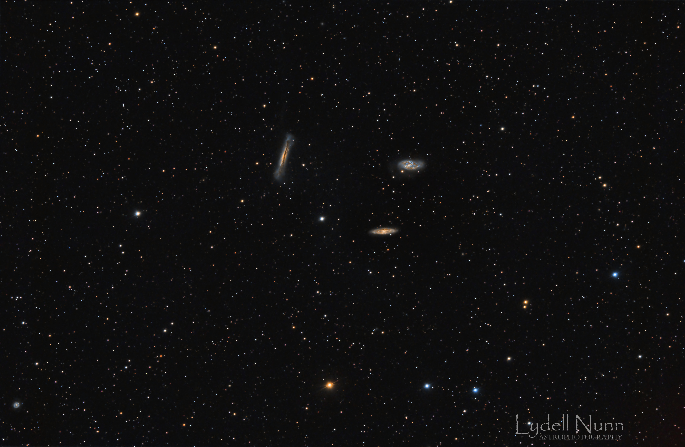
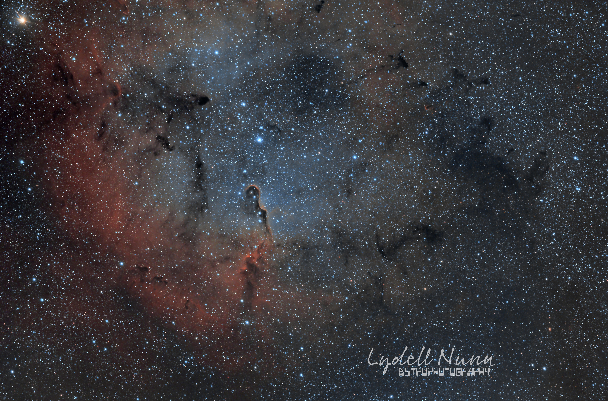
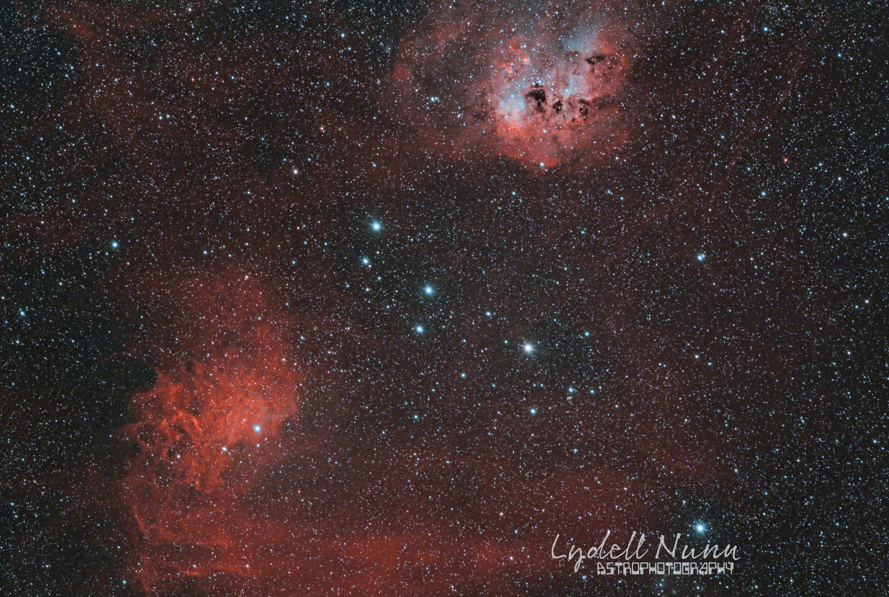
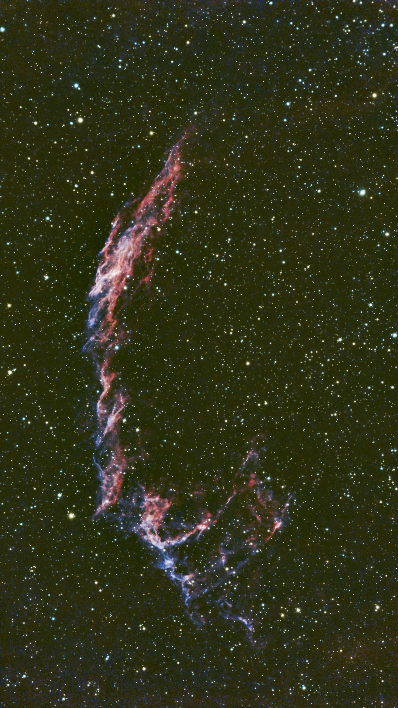
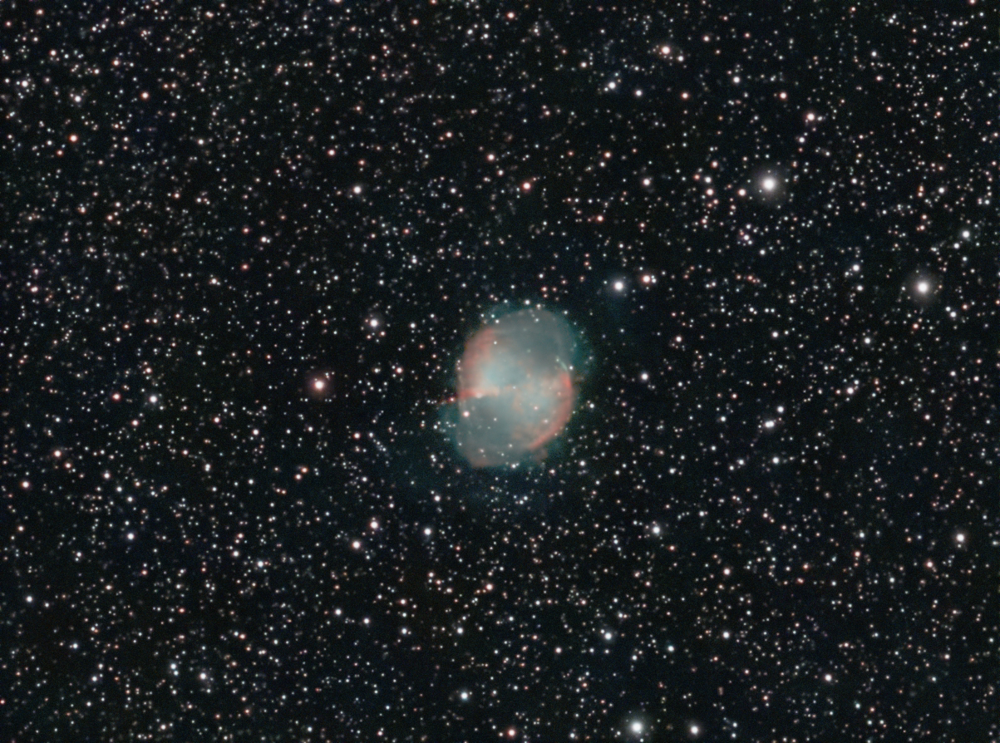
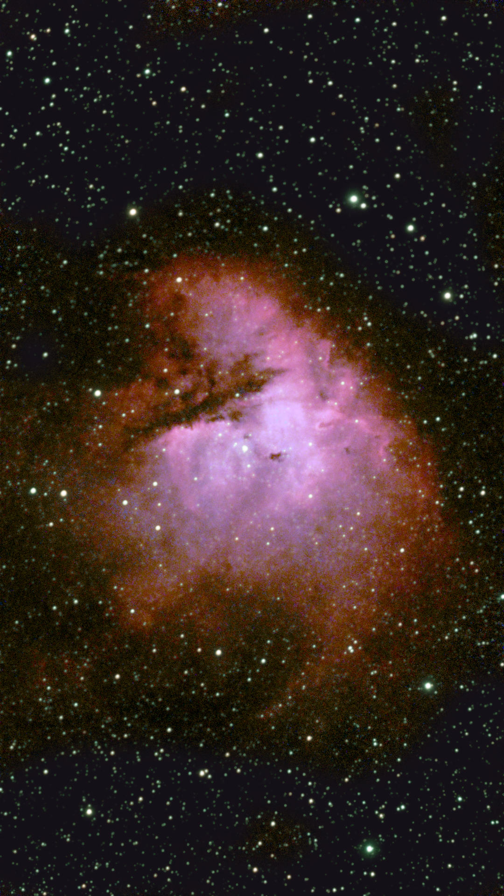
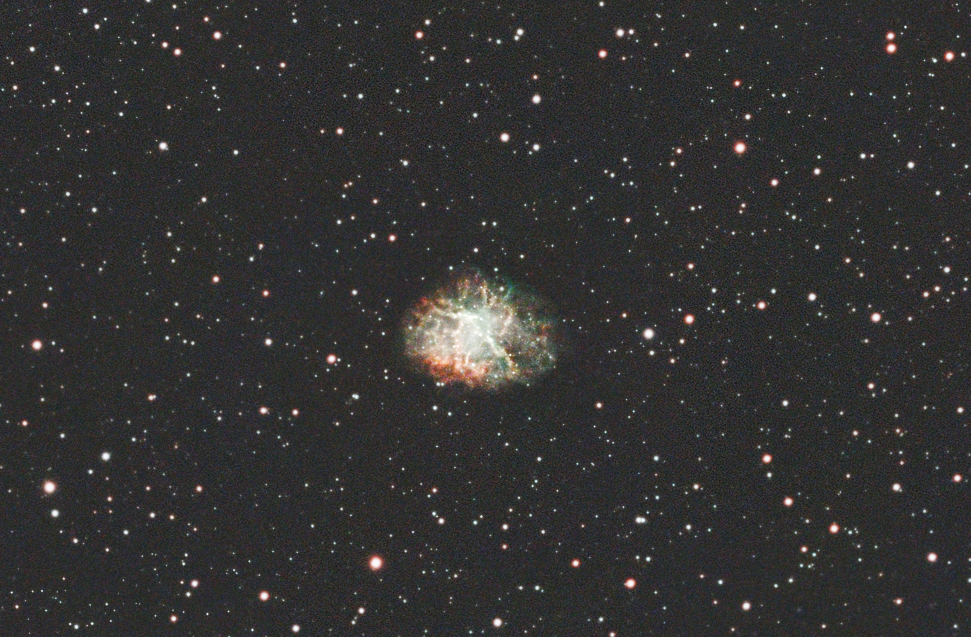

Gallery

YCAS member Adam Love provided this image of an emmission nebula in Cassiopeia.
 The picture of the Heart Nebula (IC1805) was taken between Dec 24 and Jan 25. Comprising six nights of imagining. Adam used the GTI71 with the ASI 2600MC Astrophotography Camera. Utilizing narrowband filters, Adam captured about 9.5 hours using the Askar D1 (HaOiii) filter and about 9.5 hours using the Asker D2 (S2Oiii) filter. The images were stacked and processed using Pixinsight using the Hubble SHO Pallet.
The picture of the Heart Nebula (IC1805) was taken between Dec 24 and Jan 25. Comprising six nights of imagining. Adam used the GTI71 with the ASI 2600MC Astrophotography Camera. Utilizing narrowband filters, Adam captured about 9.5 hours using the Askar D1 (HaOiii) filter and about 9.5 hours using the Asker D2 (S2Oiii) filter. The images were stacked and processed using Pixinsight using the Hubble SHO Pallet.
YCAS member Lydell Nunn has taken some excellent pictures of deep sky objects.
 The Leo Triplet of galaxies consists of three galaxies, which lie at an average distance of 35 million light-years from Earth, below the belly of the constellation Leo the lion. NGC 3628 (top-left in the image) is viewed edge-on, while Messier 65 (bottom-right) and Messier 66 (top-right) are tilted towards the Earth. M65 & 66 were discovered by Charles Messier on March 1, 1780; however, his telescope lacked the resolution to detect the dimmest of the trio, NGC 3628. Also known as the Hamburger Galaxy, NGC 3628 was not discovered until April 8, 1784, by William Herschel.
The image was captured from Wallingford-MAK Observatory on February 20, 2021. It consists of 125 2-minute exposures for a total integration time of just over four hours. The data was captured with SGP with pre and postprocessing performed in Pixinsight and Photoshop (watermark). Nexdome Observatory Control: Primaluce Lab Eagle 3S Scope: RASA 8 f/2 Imaging camera: ASI2600 MC Pro Guide scope: ZWO 30mm f/4 Guide camera: ASI 120mm mini Guiding: PHD2 Filter: Optolong L-Pro filter Flat frames: 50 Dark frames: 30 Bias frames: 50 Sky: Bortle 5⁄6 Planetarium: Cartes du Ciel
 IC 1396 - The Elephant Trunk Nebula is located 2,400 light-years from the Earth, in the constellation Cepheus.
The image was captured from Wallingford-MAK Observatory over three days in November 2021. It consists of 167 5-minute exposures for a total integration time of just under 14 hours. The data was captured with SGP with pre and postprocessing performed in Pixinsight and Photoshop (watermark). Nexdome Observatory Control: Primaluce Lab Eagle 3S Scope: RASA 8 f/2 Imaging camera: ASI2600 MC Pro Guide scope: ZWO 30mm f/4 Guide camera: ASI 120mm mini Guiding: PHD2 Filter: IDAS NBZ Flat frames: 50 Dark frames: 30 Bias frames: 50 Sky: Bortle 5⁄6 Planetarium: Cartes du Ciel
 IC 410 - the Tadpole Nebula and IC 405 - the Flaming Star Nebula. The image is comprised of 90 3-minute exposures. The total integration time is 4.5 hours. Found in the constellation Auriga, the Tadpole is located 12,000 light-years from Earth, and is about 100 light-years across. The Flaming Star nebula is located 1,500 from Earth and approximately five light-years across.
The image was captured with SGP with pre and postprocessing performed in Pixinsight and Photoshop (watermark). Nexdome Observatory Control: Primaluce Lab Eagle 3S Scope: RASA 8 f/2 Imaging camera: ASI2600 MC Pro Guide scope: ZWO 30mm f/4 Guide camera: ASI 120mm mini Guiding: PHD2 Filter: IDAS NBZ Flat frames: 50 Dark frames: 30 Bias frames: 50 Sky: Bortle 5⁄6 Planetarium: Cartes du Ciel
YCAS member Julie is new to astrophotography and has some excellent success with her SeeStar 50 telescope, stacking the (about) 4 hours of images with Siril software and using Starnet to separate the stars. Processed with Siril and Graxpert and combined in Photoshop Elements. 


Julie processed the Crab Nebula in Pixinsight, BlurXT and Graxpert, using Starnet for star removal and combined in Photoshop. 